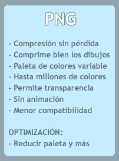

***** IDENTIFICADOR PARA SALTAR EL INICIO DE LA PÁGINA *****
(***** LIGA REGRESA A ENLACES EN LA MISMA PÁGINA *****)
6.4. Formato del texto6.4.1. Texto en un Párrafo
6.4.1. Texto en un párrafo centrado
6.4.1. Texto en un párrafo con font de tamaño 5
Código, Bloque Indentado
(Este es un ejemplo muy simple del uso de pre)
Sin Tag pre:-------- | | | | --------

(http://www.desarrolloweb.com/articulos/19.php) - Presenta los formatos gráficos utilizados en las páginas web, el GIF, el JPG y PNG. Hace hincapié en los dos primeros, resumiendo sus características y enseñando a optimizar los ficheros. El componente gráfico de las páginas web tiene mucha importancia, es el que hace que estas sean vistosas y el que nos permite aplicar nuestra creatividad para hacer del diseño de sitios una tarea agradable. Es también una herramienta para acercar los sitios al mundo donde vivimos, sin embargo, es también el causante de errores graves en las páginas y hacer de estas, en algunos casos, un martirio para el visitante. ...
(http://www.desarrolloweb.com/articulos/19.php) - Presenta los formatos gráficos utilizados en las páginas web, el GIF, el JPG y PNG. Hace hincapié en los dos primeros, resumiendo sus características y enseñando a optimizar los ficheros. El componente gráfico de las páginas web tiene mucha importancia, es el que hace que estas sean vistosas y el que nos permite aplicar nuestra creatividad para hacer del diseño de sitios una tarea agradable. Es también una herramienta para acercar los sitios al mundo donde vivimos, sin embargo, es también el causante de errores graves en las páginas y hacer de estas, en algunos casos, un martirio para el visitante. ...
(http://www.desarrolloweb.com/articulos/19.php) - Presenta los formatos gráficos utilizados en las páginas web, el GIF, el JPG y PNG. Hace hincapié en los dos primeros, resumiendo sus características y enseñando a optimizar los ficheros. El componente gráfico de las páginas web tiene mucha importancia, es el que hace que estas sean vistosas y el que nos permite aplicar nuestra creatividad para hacer del diseño de sitios una tarea agradable. Es también una herramienta para acercar los sitios al mundo donde vivimos, sin embargo, es también el causante de errores graves en las páginas y hacer de estas, en algunos casos, un martirio para el visitante. ...
(http://www.desarrolloweb.com/articulos/19.php) - Presenta los formatos gráficos utilizados en las páginas web, el GIF, el JPG y PNG. Hace hincapié en los dos primeros, resumiendo sus características y enseñando a optimizar los ficheros. El componente gráfico de las páginas web tiene mucha importancia, es el que hace que estas sean vistosas y el que nos permite aplicar nuestra creatividad para hacer del diseño de sitios una tarea agradable. Es también una herramienta para acercar los sitios al mundo donde vivimos, sin embargo, es también el causante de errores graves en las páginas y hacer de estas, en algunos casos, un martirio para el visitante. ...
(http://www.desarrolloweb.com/articulos/19.php) - Presenta los formatos gráficos utilizados en las páginas web, el GIF, el JPG y PNG. Hace hincapié en los dos primeros, resumiendo sus características y enseñando a optimizar los ficheros. El componente gráfico de las páginas web tiene mucha importancia, es el que hace que estas sean vistosas y el que nos permite aplicar nuestra creatividad para hacer del diseño de sitios una tarea agradable. Es también una herramienta para acercar los sitios al mundo donde vivimos, sin embargo, es también el causante de errores graves en las páginas y hacer de estas, en algunos casos, un martirio para el visitante. ...
En la página 7, encontraras una liga a la página donde lo explican
***** IDENTIFICADOR PARA REGRESAR DESDE EL INICIO DE LA PÁGINA *****